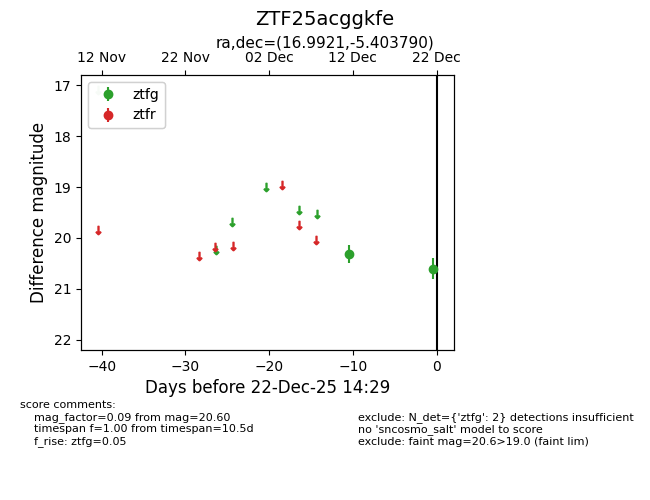
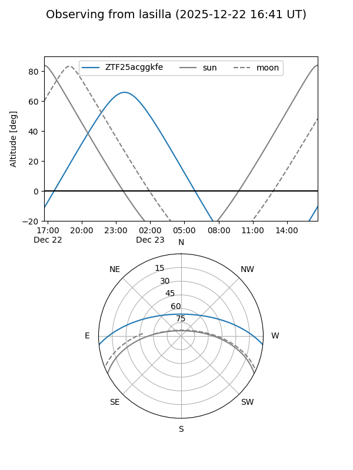
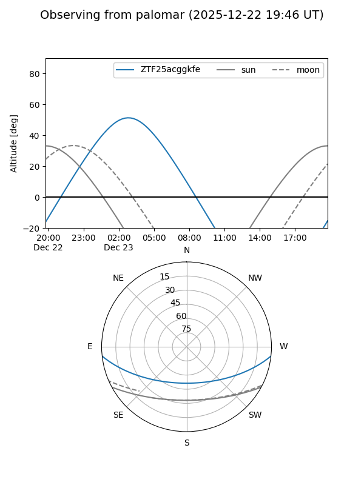

ZTF25acggkfe
Target ZTF25acggkfe at 2025-12-22 14:31
Aliases and brokers:
FINK: fink-portal.org/ZTF25acggkfe
Lasair: lasair-ztf.lsst.ac.uk/objects/ZTF25acggkfe
ALeRCE: alerce.online/object/ZTF25acggkfe
alt names
ZTF25acggkfe (ztf,fink_ztf)
Coordinates:
equatorial (ra, dec) = 16.9921,-5.40379
equatorial (HMS+DMS) = 01:07:58.10,-05:24:13.64
galactic (l, b) = (133.9357,-67.92168)
Flags:
Photometry:
last ztfg=20.60
2 ztfg detections
Lightcurve

Visibility


Additional plots